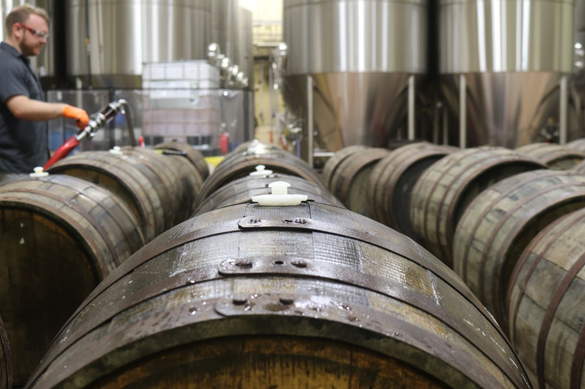

Sam Whitaker · Brewer & Publican
The firkin holds what the brew sheet says. No more, no less.
I brew five cask ales on a five-barrel plant behind the bar, and I keep the books in the open. Every strength on this site is worked out from the gravities the beer actually reached — not the strength I was aiming at — and every yield is counted in firkins of 72 pints, rounded down, with the losses printed next to it.

The brew sheet
Pick a beer. The sheet shows the gravities, the strength they give, and what a brew of it really yields after losses.
Stillage Bitter
Best bitter · Brew sheet entry
- Original gravity (measured)
- 1.040
- Final gravity (measured)
- 1.010
- Strength
- 3.9% ABV
- Yield after losses
- 18 firkins · 1,296 pints
- At the bar
- £4.60 / pint
- To trade
- £118 / firkin
- Cellar notes
IBU (bitterness) and EBC (colour) are given as descriptive units on each sheet — useful for comparing one beer with another, not measurements of quality. Strength is different: it is a legal and physical fact about the beer, so it is computed, never rounded up for the pump clip.
Table 1 — the printed brew table. The explorer above reads from the same figures.
| Beer | Style | OG | FG | ABV | Brew length | Loss | Firkins filled | Saleable pints | Per pint | Trade firkin |
|---|---|---|---|---|---|---|---|---|---|---|
| Stillage Bitter | Best bitter | 1.040 | 1.010 | 3.9% | 5 bbl · 1,440 pt | 8% | 18 | 1,296 | £4.60 | £118 |
| Copperline Pale | Pale ale | 1.046 | 1.011 | 4.6% | 5 bbl · 1,440 pt | 8% | 18 | 1,296 | £4.90 | £126 |
| Dark Lantern Porter | Porter | 1.052 | 1.014 | 5.0% | 4.5 bbl · 1,296 pt | 9% | 16 | 1,152 | £5.20 | £134 |
| Harvest Gold | Golden ale | 1.038 | 1.009 | 3.8% | 5 bbl · 1,440 pt | 7% | 18 | 1,296 | £4.40 | £112 |
| Old Stillage | Old ale | 1.068 | 1.018 | 6.6% | 2.5 bbl · 720 pt | 10% | 9 | 648 | £6.20 | £168 |
The cellar calculator
The arithmetic the cellar book runs on. Stillage too much and the last firkin dies on the stillage; stillage too little and the bar runs dry on Saturday.
Will it finish in condition?
Set the firkins on the stillage and the days you are giving them. This house sells about 70 pints of cask ale on a weekday and about 120 on a Friday or Saturday — those are our own till figures, printed so the verdict can be checked, not just believed.
The cellar book
What is on, what is conditioning, and what is finished — updated from the book by the cellar door, not from a marketing calendar.
Cellar book — week of 16 November 2026
| Beer | Style | ABV (computed) | Position | Status |
|---|---|---|---|---|
| Stillage Bitter | Best bitter | 3.9% | 2 firkins on, 1 conditioning | On now |
| Copperline Pale | Pale ale | 4.6% | 1 firkin on, 2 conditioning | On now |
| Harvest Gold | Golden ale | 3.8% | 1 firkin on | On now |
| Dark Lantern Porter | Porter | 5.0% | Racked 12 Nov — a full week to condition | Conditioning |
| Old Stillage | Old ale | 6.6% | Last firkin finished 9 Nov | Finished |
A finished cask stays in the book, marked finished. Old Stillage is brewed at half length twice a year; the next brew is in January, and no, we will not be “getting a similar one in” — the book would know.
Prices, in print
The tariff is Table 1 above. This is how the rest of the money works.
- At the bar
- Per-pint prices are in Table 1 — £4.40 to £6.20. A half is half the pint price, including Old Stillage. There is no “guest beer” premium and no festival pricing: the October festival charged the same tariff as any other week.
- Trade firkins
- Firkins to other pubs and clubs at the Table 1 trade prices (£112–£168 by beer), 72 pints in the cask, delivered within 15 miles on a Thursday round. Trade accounts are settled at 14 days. Empty casks come back on the next round; a cask deposit of £50 per firkin is held on the first order only.
- Event casks
- A firkin for a wedding, a club night or a village hall: trade price for the beer, plus £25 for stillage, tap and dispense hire, plus a £50 refundable deposit on the cask and kit. Order 7 days ahead so the cask can be vented and settled properly — a cask collected in a hurry is a cloudy pint, and we would rather say no.
- What moves the price
- Three things, in order: the malt and hop harvest (a bad barley year reaches the bar by spring); energy, because a boil is a boil; and duty — beer duty is charged on the alcohol in the beer, so a stronger beer carries more duty in every pint. That is part of why Old Stillage costs what it costs, and the sheet shows its strength.
From the tasting panel
Attached to Stillage Bitter — the beer the panel chose. The full record is in the cellar records.
Fourteen of us tasted four versions blind, twice, and argued about bitterness for a month. The beer on the bar now is the one that won both tastings — and Sam printed the losing versions' gravities on the same sheet. Nobody does that. It is why the panel still turns up.